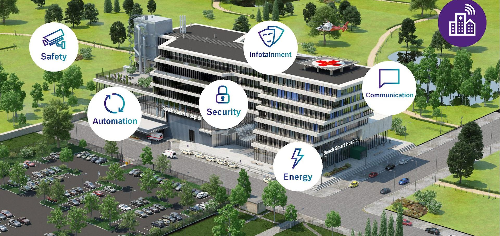

BETTER CITIES, BETTER LIFE!
 |

|
SMART TOURISM |
SMART TRANSPORTATION |
|
Smart tourism is an important component of a smart city, it refers to the application of information and communication technology, such similar to the smart cities, for developing innovative tools and approaches to improve tourism.[3][2] Smart tourism is reliant on core technologies such as ICT, mobile communication, cloud computing, artificial intelligence, and virtual reality. |
Offering users access to different modes of transport via a single platform such as a website. Users can choose the way they want to travel. Where current transportation systems are disjointed, it integrates the first and last mile connectivity seamlessly. |
|  |

|

|
SMART HOSPITALS |
GARBAGE COLLECTION AND PROCESSING |
THE TECHNOLOGICAL INNOVATION |
|
Smart Hospitals are hospitals which optimize, redesign and/or build new clinical processes, management systems and maybe even infrastructure, all enabled by underlying digitized networking infrastructure of interconnected assets, to provide a valuable service or insight which was not possible or available earlier, to achieve better patient care, experience and operational efficiency. |
Garbage disposal has always been a major topic of social health. When the household dumps the rubbish into the refuse chute, the waste is transported by high-pressure gas through the underground pipeline to the central treatment collection station at a speed of 50 to 80 kilometers per hour, and then transported to the garbage incinerator by a large garbage truck. Staff reduction of 70%, and also it will save the needs of the garbage room. |
Promoting technological innovation, in the city high-tech center and devoted to research and practice. The old city transformation program uses a series of intelligent technology means, including the promotion of free electric vehicle charging facilities, smart sensor garbage collection point, intelligent sensor parking garage and parking management, and public water management and water conservation plan. |